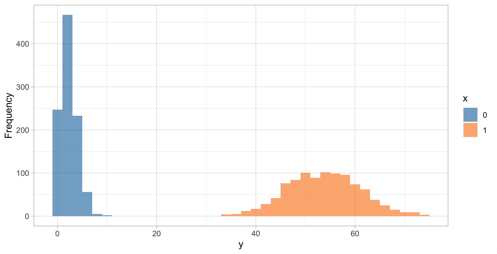

_(32733937383).jpg){kind=link}
| Estimate | Std. Error | p-value | |
|---|---|---|---|
| (Intercept) | 3.386 | 0.075 | <0.001 |
| Bread2 | 0.154 | 0.061 | 0.011 |
| Bread3 | 0.026 | 0.063 | 0.684 |
| Bread4 | -0.030 | 0.064 | 0.634 |
| Filling2 | 0.097 | 0.088 | 0.272 |
| Filling3 | 0.468 | 0.081 | <0.001 |
| Butter1 | 0.063 | 0.089 | 0.478 |
| Filling2:Butter1 | 0.248 | 0.119 | 0.038 |
| Filling3:Butter1 | 0.277 | 0.111 | 0.012 |
Quasi-likelihoods
Statistics III - CdL SSE
Tommaso Rigon
Università degli Studi di Milano-Bicocca
Homepage

Meat ants (Iridomyrmex purpureus).
In Unit C and Unit D we saw that binomial and Poisson regression may suffer from overdispersion: the data are more variable than the model allows.
This unit presents quasi-likelihoods (Wedderburn 1974), a simple way to handle overdispersion without specifying a distribution for Y_i: we only specify its mean and its variance.
The unit has three parts: a motivating example, the theory of quasi-likelihoods, and the complete analysis of the example.
An alternative, not covered in this course, is to replace the Poisson or the binomial with a different parametric distribution, e.g. the negative binomial.
The Ants data
The
Antsdataset of theMLGdatalibrary comes from an experiment run by students of an Australian university (Salvan et al. 2020). The aim is to study which sandwiches meat ants prefer.The explanatory variables are three experimental factors:
Bread(4 types): rye, wholemeal, multigrain, white;Filling(3 types): Vegemite, peanut butter, ham and pickles;Butter(2 levels): present (1) or absent (-1).
For each of the 4 \times 3 \times 2 = 24 combinations, two pieces of sandwich were placed near the entrance of an ant nest, for a total of n = 48 observations.
The response
Ant_countis the number of ants on the sandwich after 5 minutes.
Exploratory analysis

FillingandButterseem to matter, whereasBreadhas a weaker effect.The response is a count, therefore a natural starting point is a Poisson regression model with logarithmic link, including the
Filling-Butterinteraction (p = 9).
A Poisson regression model
According to the Wald tests,
Bread2,Filling3and both interaction terms are significant at the 5\% level.But can we trust these standard errors and the associated tests?
Is there overdispersion?
Relative to the Poisson model, overdispersion means that \text{var}(Y_i) = \phi\,\mu_i with \phi > 1. Hence, we need an estimate of \phi.
Recall from Unit B the moment estimator of \phi which, in the Poisson case, is \hat{\phi} = \frac{X^2}{n - p}, \qquad X^2 = \sum_{i=1}^n \frac{(y_i - \hat{\mu}_i)^2}{\hat{\mu}_i}. If the Poisson model is correct, we should find \hat{\phi} \approx 1.
In the
Antsdata we obtain X^2 = 163.07 on n - p = 39 degrees of freedom, hence \hat{\phi} = 4.18 (p-value of the X^2 test <0.001).The variance is about four times the Poisson one, so the Poisson standard errors are too small.
A large X^2 may also be due to a misspecified mean, e.g. omitted covariates or interactions, or a wrong link.
A word of caution
A tempting shortcut is to compare the sample mean and variance of the response. In the
Antsdata they are 43.6 and 327. Is this enough to conclude that there is overdispersion? No.The relation \text{var}(Y_i) = \phi\,\mu_i concerns Y_i given the covariates, since \mu_i depends on \bm{x}_i.
Consider n = 2000 observations from Y_i \overset{\text{ind}}{\sim} \text{Poisson}(\mu_i), \qquad \log{\mu_i} = 1 + 3 x_i, \qquad x_i \overset{\text{iid}}{\sim} \text{Bernoulli}(0.5), which have no overdispersion by construction.
The simulated data have mean 28.2 and variance 691.2, simply because the covariate shifts the mean.
Once the covariate is accounted for, the Poisson fit gives X^2/(n-p) = 1.009.
Quasi-likelihood assumptions
The quasi-likelihood approach only relies on the following second-order assumptions:
(E.1) \quad\mathbb{E}(Y_i) = \mu_i = g^{-1}(\bm{x}_i^T\beta);
(E.2) \quad\text{var}(Y_i) = \dfrac{\phi}{\omega_i}v(\mu_i), with \phi > 0 unknown;
(E.3) \quad Y_i and Y_j are independent for i \neq j.
These assumptions define a semiparametric model: only the first two moments of Y_i are specified, the distribution is not.
A GLM with Y_i \overset{\text{ind}}{\sim} \text{ED}(\mu_i, a_i(\phi)v(\mu_i)) and a_i(\phi) = \phi/\omega_i satisfies (E.1)-(E.3), but it also specifies the whole distribution of Y_i.
On the choice of the variance function
With identity link and v(\mu_i) = \omega_i = 1, (E.1)-(E.3) are essentially the Gauss-Markov assumptions of Unit A, with \phi = \sigma^2. The novelty concerns counts and proportions, where GLMs fix \phi = 1.
Keeping the variance function of a GLM, (E.2) inflates its variance by \phi: overdispersion if \phi > 1, underdispersion (rare) if \phi < 1.
The two most common quasi-likelihood models are:
- the quasi-Poisson model, with \text{var}(Y_i) = \phi\,\mu_i;
- the quasi-binomial model, with \text{var}(Y_i) = \phi\,\mu_i(1-\mu_i)/m_i.
As noted in Unit C, the quasi-binomial model makes sense only for grouped data. With binary data (m_i = 1) we necessarily have \text{var}(Y_i) = \mu_i(1-\mu_i), hence \phi = 1.
The variance function v(\cdot) need not be the one of a GLM: e.g. v(\mu) = \mu^2(1-\mu)^2 for proportions (Wedderburn 1974) is not the variance function of any exponential dispersion family.
The quasi-score
Without a likelihood, how do we estimate \beta?
Recall from Unit B that the likelihood equations of a GLM are q_r(\beta) = 0, for r=1,\dots,p, where q_r(\beta) = \sum_{i=1}^n \frac{(y_i - \mu_i)}{\text{var}(Y_i)}\frac{\partial \mu_i}{\partial \beta_r} = \frac{1}{\phi}\sum_{i=1}^n \omega_i\frac{(y_i - \mu_i)}{v(\mu_i)}\frac{x_{ir}}{g'(\mu_i)}.
These equations depend on the distribution of Y_i only through \mathbb{E}(Y_i) and \text{var}(Y_i), that is, only through assumptions (E.1) and (E.2).
Hence, we define \hat{\beta} as the solution of q_r(\beta) = 0, and we call q_r(\beta) the quasi-score. These equations do not depend on \phi and are solved with the IRLS algorithm.
If v(\cdot) is the variance function of a GLM, as in the quasi-Poisson and quasi-binomial models, \hat{\beta} is (also) the maximum likelihood estimate of that GLM.
Properties of the quasi-score
Let us regard the quasi-score q_r(\beta) as a random variable, i.e. with Y_i in place of y_i.
Under (E.1)-(E.3) alone, it satisfies the Bartlett identities of a genuine score function, namely \mathbb{E}\{q_r(\beta)\} = 0 and \mathbb{E}\{q_r(\beta)q_s(\beta)\} = -\mathbb{E}\left\{\frac{\partial q_r(\beta)}{\partial \beta_s}\right\} = \sum_{i=1}^n \frac{1}{\text{var}(Y_i)}\frac{\partial \mu_i}{\partial \beta_r}\frac{\partial \mu_i}{\partial \beta_s} = [\bm{X}^T\bm{W}\bm{X}]_{rs}, where \bm{W} = \text{diag}(w_1,\dots,w_n) contains the weights of Unit B, that is w_i = \frac{1}{\text{var}(Y_i)g'(\mu_i)^2} = \frac{1}{\phi}\frac{\omega_i}{v(\mu_i) g'(\mu_i)^2}.
The quasi-score behaves like a genuine score, even though no distribution has been specified. This explains the name quasi-likelihood, and it is the key to the asymptotic results.
Asymptotic properties of \hat{\beta}
Under the assumptions (E.1)-(E.3) and (mild) regularity conditions, the estimator \hat{\beta} is consistent and asymptotically normal: \hat{\beta} \: \dot{\sim} \: \text{N}_p\left(\beta, (\bm{X}^T\bm{W}\bm{X})^{-1}\right).
The result is formally identical to the one of Unit B, but it holds under much weaker assumptions, as for the OLS estimator under the Gauss-Markov assumptions.
Does it make sense to talk about the exact distribution of \hat{\beta}? No: it would require the distribution of Y_i, which we deliberately left unspecified.
Consistency only requires (E.1): if the mean is correctly specified, \hat{\beta} is consistent even when v(\mu_i) is wrong. The standard errors, however, rely on (E.2).
A recipe for overdispersion using quasi-likelihoods
The dispersion \phi is estimated with the method of moments estimator already used for the
Antsdata, which is consistent under (E.1)-(E.3). In general: \hat{\phi} = \frac{X^2}{n - p} = \frac{1}{n - p}\sum_{i=1}^n \omega_i \frac{(y_i - \hat{\mu}_i)^2}{v(\hat{\mu}_i)}.The standard errors are obtained from (\bm{X}^T\hat{\bm{W}}\bm{X})^{-1}, plugging in \hat{\beta} and \hat{\phi}. The weights w_i are inversely proportional to \phi.
Variance inflation in a nutshell
When v(\cdot) is the variance function of a GLM, as in the quasi-Poisson and quasi-binomial models:
Fit the ordinary GLM and keep its maximum likelihood estimate \hat{\beta}.
Multiply the standard errors of the GLM by \sqrt{\hat{\phi}}, that is [\widehat{\text{se}}_\text{quasi}(\hat{\beta})]_j = \sqrt{\hat{\phi}}\,[\widehat{\text{se}}_\text{glm}(\hat{\beta})]_j.
The quasi-log-likelihood
To compare nested models we need something like a log-likelihood. Under (E.1)-(E.3) we define the quasi-log-likelihood \ell_Q(\beta, \phi) = \sum_{i=1}^n \int_{y_i}^{\mu_i} \frac{\omega_i(y_i - t)}{\phi\,v(t)}\,\mathrm{d}t, \qquad \mu_i = g^{-1}(\bm{x}_i^T\beta), provided that these integrals exist.
Its gradient is the quasi-score, that is \partial \ell_Q(\beta, \phi)/\partial \beta_r = q_r(\beta). Indeed, by the chain rule, the derivative of the ith integral is \omega_i(y_i - \mu_i)/\{\phi\,v(\mu_i)\} \times \partial \mu_i / \partial \beta_r.
Since \ell_Q(\beta, \phi) is a function of \beta, its second derivatives \partial q_r(\beta)/\partial \beta_s are symmetric in r and s, as for a genuine log-likelihood.
In general \ell_Q(\beta, \phi) is not a log-likelihood. However, in the Poisson case (\omega_i = 1, v(t) = t, \phi = 1) we get \ell_Q(\beta, 1) = \sum_{i=1}^n(y_i \log{\mu_i} - \mu_i), up to constants, which is the Poisson log-likelihood.
Comparing nested models
The quantity D(\bm{y}; \bm{\mu}) = -2\phi\,\ell_Q(\beta, \phi) is called quasi-deviance. When v(\cdot) is the variance function of a GLM, it coincides with the deviance of Unit B, e.g. the Poisson or the binomial one.
Let M_0 \subset M_1 be two nested models, with p_0 and p parameters, and let q = p - p_0. The quasi-log-likelihood ratio statistic is W = 2[\ell_Q(\hat{\beta}, \hat{\phi}) - \ell_Q(\hat{\beta}_0, \hat{\phi})] = \frac{D(\bm{y}; \hat{\bm{\mu}}_0) - D(\bm{y}; \hat{\bm{\mu}})}{\hat{\phi}} \: \dot{\sim} \: \chi^2_q, where \hat{\phi} is estimated from the larger model.
The (quasi-)deviances must not be used as goodness-of-fit statistics, since \phi is unknown.
There is no likelihood, therefore the AIC is not available.
The quasi-Poisson model
- With the same mean structure, we obtain \hat{\phi} = 4.18: the standard errors are multiplied by \sqrt{\hat{\phi}} = 2.04.
| Estimate | SE (Poisson) | SE (quasi) | p-value (Poisson) | p-value (quasi) | |
|---|---|---|---|---|---|
| (Intercept) | 3.386 | 0.075 | 0.153 | <0.001 | <0.001 |
| Bread2 | 0.154 | 0.061 | 0.124 | 0.011 | 0.221 |
| Bread3 | 0.026 | 0.063 | 0.128 | 0.684 | 0.843 |
| Bread4 | -0.030 | 0.064 | 0.130 | 0.634 | 0.817 |
| Filling2 | 0.097 | 0.088 | 0.180 | 0.272 | 0.594 |
| Filling3 | 0.468 | 0.081 | 0.166 | <0.001 | 0.008 |
| Butter1 | 0.063 | 0.089 | 0.182 | 0.478 | 0.730 |
| Filling2:Butter1 | 0.248 | 0.119 | 0.244 | 0.038 | 0.316 |
| Filling3:Butter1 | 0.277 | 0.111 | 0.226 | 0.012 | 0.229 |
- The estimates are identical, but the standard errors are larger: the tests are affected.
Model simplification
- The larger standard errors suggest a simpler model. We remove one term at a time, using the quasi-log-likelihood ratio statistic W and its \chi^2_q approximation.
| Model | Removed term | q | W | p-value |
|---|---|---|---|---|
| Full model | Bread | 3 | 2.581 | 0.461 |
| Full model | Filling:Butter | 2 | 1.621 | 0.445 |
| Without Bread | Filling:Butter | 2 | 1.614 | 0.446 |
Neither
Breadnor theFilling-Butterinteraction is relevant, once overdispersion is accounted for.The final model only includes
FillingandButter, with p = 4 parameters.
The final model
| Estimate | Std. Error | p-value | exp(Estimate) | |
|---|---|---|---|---|
| (Intercept) | 3.318 | 0.103 | <0.001 | 27.596 |
| Filling2 | 0.233 | 0.120 | 0.059 | 1.262 |
| Filling3 | 0.621 | 0.111 | <0.001 | 1.860 |
| Butter1 | 0.263 | 0.089 | 0.005 | 1.301 |
Under the logarithmic link, \exp(\beta_j) is the multiplicative change of the mean number of ants (Unit D). The estimated dispersion is \hat{\phi} = 4.07.
Compared to Vegemite, ham and pickles attract on average about 86% more ants, and peanut butter about 26% more (borderline significant).
The presence of butter increases the mean number of ants by about 30%. The type of bread is irrelevant.
References
Agresti, A. (2015), Foundations of Linear and Generalized Linear Models, Wiley.
Salvan, A., Sartori, N., and Pace, L. (2020), Modelli lineari generalizzati, Springer.
Wedderburn, R. W. M. (1974), “Quasi-likelihood functions, generalized linear models, and the gauss-newton method,” Biometrika, 61, 439–447.